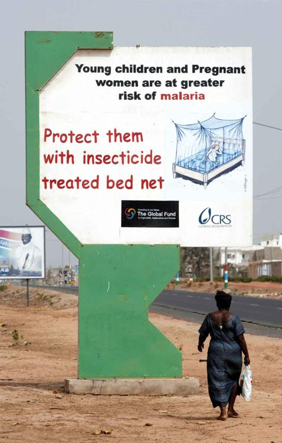

Progress has slowed in the battle to eradicate malaria. Fully 90 percent of new malaria cases occur in Africa.
We’ve just documented stark disparities in health and mortality in the United States. Yet when we step back and look at health through a global lens, we see even bleaker disparities. Some economically disadvantaged societies struggle to maintain basic living standards that are necessary for good health, such as adequate food, basic medical supplies, and clean water. Although major strides have occurred in reducing and, in some cases, eliminating infectious diseases worldwide, these strides have stalled in the era of the COVID-19 pandemic. Although Italy, China, and the United States have received the most media coverage, there is hardly a country untouched. Lower-income countries also face greater struggles in providing medical care to those infected with the virus.
Basic medical resources are still lacking in many low-income nations. The relatively few hospitals and trained doctors are concentrated in urban areas, where the affluent minority monopolizes their services. Most developing countries have introduced some form of national health service, organized by the central government, but the medical services are limited. The wealthy use private health care, sometimes traveling to the West for sophisticated medical treatment. Conditions in many developing world cities, particularly in the shantytowns, make the control of infectious diseases very difficult: Many shantytowns lack basic services such as water, sewage systems, and garbage disposal.
Water and sanitation are critical factors for public health, yet many nations fall short on both dimensions. The World Health Organization and UNICEF (2019a) reported that in 2017, 2.2 billion people lacked safe water. Further, in 2017, 2 billion people lacked access to basic sanitation facilities such as toilets or latrines; 673 million people still practiced open defecation. The vast majority of those without basic sanitation live in Asia and sub-Saharan Africa. These conditions are breeding grounds for diseases such as diarrhea, malaria, and trachoma, although the means of transmission varies based on the disease. For example, trachoma—an infectious eye disease that can cause blindness—is strongly related to lack of face washing, given the lack of water supply. This example vividly and sadly illustrates the powerful and varied ways that poverty affects health.
Human Immunodeficiency Virus (HIV) and Acquired Immunodeficiency Syndrome (AIDS)
COVID-19 is not the only infectious disease to ravage populations in the United States and worldwide in contemporary times: HIV/AIDS is a devastating global epidemic. Since the start of the epidemic in the early 1980s, 32 million people have died from AIDS-related illnesses as of the end of 2018. More than 37.9 million people worldwide were living with HIV in 2018 (Global Map 18.2). In 2018 alone, 1.7 million people became newly infected with HIV and another 770,000 people died from AIDS-related illnesses (UNAIDS, 2019b). The majority of people affected in the world today are heterosexual and about half are women.
Although the spread of HIV/AIDS in Western societies has slowed, the illness is still a source of crisis, especially in the developing world, where health education is limited and the medical establishment is poor. Fully 25 percent of new HIV infections occur in Eastern and Southern Africa, where 20.6 million people are currently living with HIV/AIDS. But progress is being made: New infections declined in that region by 28 percent overall between 2010 and 2018 and new infections among children dropped by 92.4 percent; AIDS-related deaths dropped by 4 percent during the same period (UNAIDS, 2019a; Avert, 2020).
In high-income countries, the rate of new infections has declined, yet the demographics are striking. Just as we reported on racial gaps in infant mortality and life expectancy earlier in this chapter, we now highlight stark Black-White differences in rates of HIV infection and treatment effectiveness. In the United States, approximately 38,500 people become infected with HIV each year, and roughly 1.1 million people are living with HIV. The incidence of infection, however, is not proportionately represented throughout the United States. In 2018, 50 percent of new AIDS diagnoses were made in the South. Although African Americans represent just 12 percent of the U.S. population, they accounted for 43 percent of HIV diagnoses in 2017. Hispanics are also disproportionately affected: They account for about 18 percent of the population but 26 percent of HIV diagnoses. In 2015, the rate of HIV infection among Blacks was nearly 9 times as high as that among Whites and more than 2 times as high as that among Hispanics. Heterosexuals accounted for 24 percent of new infections in 2015, while men who have sex with men accounted for another 66 percent. Another 6 percent of cases were attributed to intravenous drug use (CDC, 2016a; 2017b; Avert, 2019).
Although there was a steep drop in AIDS-related deaths after the introduction of antiretroviral therapy, African Americans are less likely than Whites to benefit from such life-prolonging treatments. African Americans have the highest death rate of people with HIV, more than seven times higher than that of their White counterparts and nearly three times the rate for Hispanics (CDC, 2016a).
Global Map 18.2
THE NUMBER OF HIV-POSITIVE PEOPLE AROUND THE WORLD
In 2019, there were 38 million people worldwide living with HIV. In that same year, 1.7 million people were newly infected with HIV; in sub-Saharan Africa, women and girls accounted for 59 percent of all new HIV infections.
Stigmatization of people with HIV/AIDS remains a major barrier to successful treatment. The stigma that associates HIV-positive status with sexual promiscuity, same-sex sexual relations, and IV drug use results in avoidance of HIV/AIDS prevention and treatment programs. In the United States, one in seven people living with HIV/AIDS do not know they are infected (CDC, 2017b). Part of the reason is the high level of fear and denial associated with being diagnosed as HIV positive. The stigma of having HIV/AIDS and the discrimination against people living with these infections are major barriers to the treatment of the epidemic worldwide. A recent study of 1,450 HIV-positive patients seeking care in India found that two-thirds of them reported authoritarian behavior from doctors, and 55 percent felt they were not treated in a dignified manner (Mehta, 2013).
Besides the devastation to individuals who suffer from it, the AIDS epidemic is creating severe social consequences, including sharply rising numbers of orphaned children. Frail older adults are increasingly called on to provide physical care to their adult children who suffer from AIDS, or to care for their grandchildren who were orphaned by their parents’ death from AIDS (Knodel, 2006). The decimated population of working adults combined with the surging population of orphans sets the stage for massive social instability; economies break down, and governments cannot provide for the social needs of orphans, who become targets for recruitment into gangs and armies.
HIV/AIDS has clearly been one of the most devastating infectious diseases in recent memory, yet medical breakthroughs in 2013 provided early evidence that a cure may someday be possible. In 2013, a baby born in Mississippi was treated with antiretroviral drugs within the first two days of the baby’s birth. Doctors announced shortly thereafter that the baby had been cured of HIV; the baby is now a thriving toddler. Although observers were skeptical, their skepticism eroded when a second baby evidenced a similar recovery in March 2014 (McNeil, 2014). In 2019, the second-ever adult was found to be cured of HIV, with the first identified twelve years earlier (Mandavilli, 2019). Although scientists haven’t reached consensus as to whether adults are actually “cured” or in long-term remission, productive strides continue.